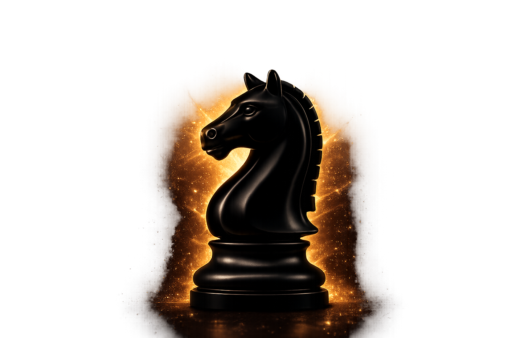

Built-in Chess Clock
Play your games with an integrated chess clock, designed for a seamless over-the-board experience even when playing offline.
Record · Analyze · Improve
Record · Analyze · Improve
VoiceMove is a chess platform designed to make recording and reviewing over-the-board games easier. Record your games using voice commands, digitize physical scoresheets, play with an integrated chess clock, and review your games with powerful engine analysis - all in one place.

While analyzing a friendly game, we realized how inefficient and time-consuming traditional scoresheets can be. Reviewing an over-the-board game often requires players to manually record moves, digitize their scoresheets, and then set up the game again for analysis.
"We believed there had to be a better way."
So we created VoiceMove - a platform designed to make recording games faster, analyzing them easier, and learning from every game more effective.
Play your games with an integrated chess clock, designed for a seamless over-the-board experience even when playing offline.
Record your moves effortlessly using voice commands. Simply speak your moves and create a digital record of your game.
Take a picture of a physical scoresheet and convert the recorded moves into a digital PGN game ready for review.
Review your games with engine-powered analysis and gain insights that help you understand mistakes and improve faster.
We are working toward bringing VoiceMove to chess academies with a dedicated system designed to help coaches monitor student games, review performance, and create a more effective learning experience.
Our goal is to make every game more than just a game - to turn it into an opportunity to learn.